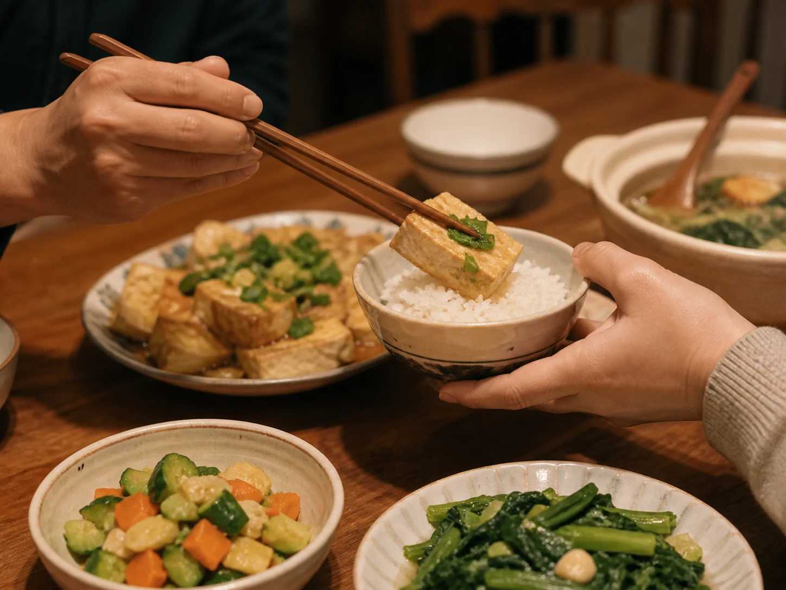

The Best Piece Passed Across the Table
At some family tables, the best piece does not stay with the person who finds it; a pair of chopsticks carries it across the center.

Chopsticks crossing the center
The shared dish sat where every hand could reach it. Steam thinned above the table, bowls touched wood, and conversation continued until one pair of chopsticks paused over a piece someone considered especially good. The piece moved outward and landed in another bowl.
At some tables, a parent or grandparent made the gesture; at others, a host watched a guest's bowl or an older sibling served a younger one. The food could be fish, meat, tofu, or a carefully chosen vegetable. The custom is not one fixed menu or a rule followed by every family. Its recognizable shape is selection: someone notices a piece and decides it belongs to someone else.
Generosity, refusal, and another serving
The movement can feel affectionate, but it can also begin a small negotiation. The receiver accepts, redirects the piece, says there is already enough, or protects the edge of the bowl from another serving. Care and insistence sometimes use the same chopsticks. A strong family record leaves room for both.
In Longan and Red Date Tea in the Women's Room, the host removes date stones before the cups reach older guests. There, care appears before serving. At the shared dinner table, it can happen in full view, while the person receiving the piece has time to answer.
What remained after the bowls
Eventually the center dishes showed more porcelain than food. One good piece might still remain, passed once more, split, or covered for someone not yet home. The point was not always self-denial. Sometimes the table was simply measuring who had eaten, who had arrived late, and who needed to be remembered.
Bowls were cleared and fruit might take their place. Chairs moved back. A few family members continued into The Evening Walk After the Meal. The gesture across the table was over, but its direction remained: attention moving outward before the room became quiet.